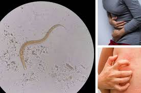

Sergio Ranucci: Capo della Società Italiana di Parassitologia, Capo dell'Istituto di Malattie Infettive e Tropicali, autore di più di 30 libri e articoli sulla parassitologia. Esperienza lavorativa: 21 anni
Nota della redazione: Ancora pochi anni fa, la comunità medica credeva che i parassiti potessero soltanto indebolire le difese immunitarie. E che non potessero essere la causa principale di diverse malattie. Ora, con più dati statistici e di ricerca scientifica disponibili, diventa chiaro che proprio l'infestazione da parassiti provoca quasi tutte le malattie gravi negli esseri umani. Secondo gli ultimi dati del Servizio sanitario nazionale, i parassiti nell’80% dei casi causano malattie che vanno dal comune raffreddore all'epatite e al cancro. Allo stesso tempo, secondo le stime preliminari degli scienziati, dal 70 al 90% degli abitanti dell'UE sono infettati da parassiti! Ogni anno circa 15 milioni di persone muoiono a causa di malattie provocate dai parassiti. Scopriamo i metodi più efficaci per eliminare i parassiti con l’aiuto di Sergio Ranucci, Capo della Società Italiana di Parassitologia.
Secondo una ricerca del Ministero della salute condotta nel 2019 su un campione di 10.000 persone, l’86% delle persone è infettato da parassiti. Le statistiche peggiorano tra i bambini: a causa della scarsa igiene, i parassiti sono stati trovati nel 90% dei bambini in età scolare e prescolare!
Personalmente, mi fido delle statistiche sanitarie e posso dire che le ricerche del nostro istituto le confermano. Circa il 92% di morti umane viene causato dalle infezioni da parassiti. E non si tratta solo di morti per determinate malattie. La stragrande maggioranza di morti per cosiddette “cause naturali” sono in realtà conseguenze dell'attività dei parassiti all'interno del corpo.
Gli studi clinici dimostrano che tutti i soggetti infetti da parassiti si ammalano spesso: almeno 2-3 volte l'anno vanno dal medico. Ma la cosa più spaventosa è che i parassiti non solo indeboliscono le difese immunitarie (come si pensava in precedenza), ma anche provocano diverse patologie. Si è scoperto che circa l’80% delle malattie sono causate dalle infestazioni da parassiti, e la maggior parte di queste malattie, se non curate, possono portare alle complicanze potenzialmente letali.
Per confermare tale ipotesi, abbiamo esaminato le cartelle cliniche dei pazienti deceduti per “cause naturali” e per malattia. In entrambi i casi, i pazienti erano infestati da parassiti.
Quindi, posso tranquillamente dire che quasi tutti noi siamo infettati da parassiti. Anche se la maggior parte di loro è estremamente difficile da diagnosticare. Quando i parassiti causano complicanze, i medici di solito cercano di curare le conseguenze senza risalire alle cause. Per rilevare i parassiti sono necessari esami specifici, anche nel caso delle autopsie. Almeno per la maggior parte di loro.
Per quanto riguarda i parassiti, molti credono che si tratti quasi esclusivamente di elminti, nel linguaggio comune di vermi. In realtà, ci sono migliaia di parassiti diversi. I parassiti possono vivere nei polmoni, nel cuore, nel fegato, nello stomaco, nel cervello e persino nel sangue umano.
I parassiti si moltiplicano e defecano all'interno del corpo umano, mentre si nutrono a spese del tessuto dell'ospite. A seconda del loro habitat, possono portare a conseguenze diverse:
- Parassiti nello stomaco: alle infezioni virali;
- Parassiti nel cuore: all'arresto cardiaco;
- Parassiti nel cervello: alla schizofrenia, al cancro o alla paralisi;
- Parassiti nel fegato: all'epatite e ai tumori del fegato.
Naturalmente, questo processo non avviene immediatamente. A seconda dell'età, dello stile di vita, dell’alimentazione di una persona e delle condizioni ambientali, il corpo resiste all'infezione per un po'. Cioè, il peggioramento avanza gradualmente e, in un primo momento, in modo asintomatico. I sintomi si verificano quando l'infezione ha già superato la barriera protettiva del sistema immunitario umano e ha iniziato a distruggere attivamente i tessuti del corpo. In questo caso, il parassiti comincia a moltiplicarsi.
Per quanto riguarda l'effetto dannoso dei parassiti, in parole semplici, loro prodotti di scarto distruggono i tessuti del corpo umano. Questo a sua volta porta alla nascita di cellule che si muovono liberamente, ognuna delle quali può costituire la base per il nuovo tipo di parassiti.
Sfortunatamente, a tutt'oggi non esistono strumenti diagnostici precisi per identificare parassiti all'interno di un corpo umano. In primo luogo, ciò è dovuto ad un numero enorme di varie specie di parassiti (più di 2000 specie di cui siamo a conoscenza), in secondo luogo, ciò è dovuto al fatto che è estremamente difficile rilevarli. La procedura dell’esame parassitologico completo in Italia è disponibile in pochi laboratori e costa un sacco di soldi.
Come proteggersi dai parassiti e impedire ai virus di distruggere l’organismo?
I primi sintomi della presenza di parassiti nel tuo corpo sono:
- Alito cattivo;
- Allergie (eruzioni cutanee, lacrimazione, naso che cola);
- Eruzioni e arrossamenti cutanei;
- Raffreddore cronico, mal di gola, congestione nasale;
- Stanchezza cronica (ti stanchi rapidamente, qualunque cosa tu faccia);
- Mal di testa frequente;
- Stitichezza o diarrea;
- Dolori articolari e muscolari;
- Nervosismo, disturbi del sonno e dell'appetito;
- Occhiaie, borse sotto gli occhi.
Se hai almeno uno di questi sintomi, la probabilità di avere parassiti nel tuo corpo è del 99%. Dovresti eliminarli subito!
Secondo le statistiche, siamo circondati da miliardi di batteri ogni giorno. Anche se stai a casa e non esci. La possibilità di contrarre l'infezione è alta. Allora, hai idea di quanto dovrebbe essere forte il sistema immunitario per respingere attacchi persistenti? Questo è esattamente il motivo per cui spesso fallisce. Gli studi recenti hanno dimostrato che le persone infettate dai parassiti semplicemente non riescono a resistere a varie infezioni e, di conseguenza, si ammalano molto più spesso. Abbiamo trovato una relazione tra questi parassiti apparentemente innocui e le difese immunitarie. A questo proposito, consigliamo vivamente di lavarsi le mani il più spesso possibile, lavare bene frutta e verdura e prediligere cibi cotti a quelli crudi. Tuttavia, se hai comunque contratto l’infezione, ti consiglio vivamente di sbarazzarti dei parassiti il più velocemente possibile. Altrimenti le tue condizioni peggioreranno di giorno in giorno. Secondo le statistiche, decine di migliaia di italiani acquistano farmaci costosi ma, purtroppo, non migliorano la propria salute. Non sospettano nemmeno che la causa sia la parassitosi. I parassiti, una volta entrati nel corpo, con il flusso di sangue e linfa si diffondono in tutto il corpo. Mascherandosi, evitano abilmente le difese immunitarie e passano da una all'altra fase della loro esistenza.
I parassiti di per sé non sono letali e non portano alle conseguenze irreversibili e alla morte, ma ogni giorno di permanenza dei parassiti nel corpo umano porta ad un indebolimento del sistema immunitario e alla presenza di scorie dannose nel sangue e questo, a sua volta, può portare anche alla morte. Viaggiando in tutto il corpo attraverso i vasi sanguigni, le larve si nutrono del sangue e dei tessuti, avvelenando la persona dall'interno. Ma il 99% delle persone infetatte dai parassiti non lo sa nemmeno. Ad eccezione di pochi casi isolati che riguardano i pazienti ricoverati in ospedale.
Ha sicuramente sentito parlare di molti metodi per rafforzare il sistema immunitario: una sana alimentazione con il giusto apporto di vitamine, minerali e probiotici, uno stile di vita attivo. Ma sono adatti solo per la prevenzione. Cosa fare se hai le difese immunitarie basse? Come non morire a causa di un'infezione parassitaria?
La scoperta rivoluzionaria degli scienziati europei è stata una vera svolta nel rafforzamento del sistema immunitario. ha velocemente guadagnato il riconoscimento internazionale nell’ambiente scientifico. Stimola l'attività delle cellule immunitarie, aumenta le difese immunitarie e distrugge diversi tipi di parassiti. L'efficacia della sua formula, che contiene vitamine ed erbe medicinali, è stata confermata dai risultati degli studi clinici. La composizione unica di sostanze liquide e di erbe medicinali aiuta delicatamente a stimolare l'attività delle cellule immunitarie, senza disturbare le reazioni biochimiche del corpo. Nel periodo indicato del trattamento, questo rimedio uccide tutti i parassiti, ripristina la salute e ripara i danni causati e, soprattutto, rafforza il sistema immunitario al fine di evitare ulteriori infezioni.
Si tratta di un farmaco antiparassitario "" che, a proposito, può essere acquistato ad un prezzo speciale! Tutti coloro che vivono nella città di possono usufruire di una promozione speciale. Ma ne parleremo più avanti. è stato creato presso l'Istituto di Parassitologia con la partecipazione di un gruppo di giovani scienziati indipendenti.
Abbiamo lavorato su due dozzine di rimedi antiparassitari contemporaneamente. Ma gli studi clinici hanno mostrato la massima efficacia di "".
"" è una combinazione sicura di tanti estratti vegetali che aiuta ad eliminare i parassiti. Gli studi clinici hanno dimostrato un'elevata efficacia di questo prodotto. Per ora è davvero l'unico rimedio efficace. Se i suoi creatori avessero voluto solo soldi, tutti i lotti di "" sarebbero stati già esportati all’estero.
Oltre che in Italia, questo rimedio è stato certificato all'Università di Parassitologia a Berlino. Gli esami clinici hanno completamente confermato i dati italiani. Anzi, i medici tedeschi sono riusciti a far guarire ancora più persone. Attualmente si stanno per completare gli studi clinici in Cina, Giappone e Vietnam. I paesi asiatici sono molto interessati in questo rimedio. Gli esami clinici hanno confermato l'alta efficacia del prodotto.
I paesi asiatici sono pronti ad acquistare a qualsiasi prezzo. Ma abbiamo un incarico dell'Istituto Superiore di Sanità, secondo il quale una notevole quantità di farmaco deve rimanere all'interno del paese per essere venduto ai cittadini italiani. Inoltre, il margine di esportazione per gli acquirenti ( viene venduto all'estero ad un prezzo decisamente più alto) ci permette di offrire i prezzi molto vantaggiosi all'interno del nostro paese.
Ad oggi, è l'unico farmaco perfettamente funzionante nel mondo per liberare l’organismo umano dai parassiti. Ecco perché le catene farmaceutiche internazionali e le grandi case farmaceutiche vogliono così tanto comprarne i diritti. Rispetto ad altri farmaci antiparassitari, agisce subito sull'intero spettro di parassiti che possono annidarsi dentro il corpo umano.
elimina e rimuove dal corpo i parassiti che vivono ovunque: nel cervello e nel cuore, nel fegato e nell'intestino. Nessun altro farmaco esistente è in grado di farlo! Inoltre, è un prodotto completamente naturale che non provoca reazioni allergiche, disturbi intestinali e altri effetti collaterali che hanno le compresse tradizionali.
Prenditi cura della tua salute. Potresti non saperlo, ma dentro di te possono vivere parassiti con una probabilità del 97-98%. Possono essere ovunque: nel sangue, nell'intestino, nei polmoni, nel cuore e nel cervello. I parassiti ti divorano dall'interno, allo stesso tempo avvelenando il tuo corpo e rendendolo vulnerabile a tutti i tipi di virus, il virus del papilloma umano compreso. Di conseguenza, avrai dei problemi di salute che possono accorciare la vita. Per non parlare delle morti improvvise che sono comunemente associate all'esposizione ai virus e parassiti.
Ordina